M 1 (Trouble Sort)
Lecture - 05
Searching and Sorting - Module 1 (Trouble Sort)
(Refer Slide Time: 00:11)
Hello, and welcome to the second week of Getting Started with Competitive Programming on NPTEL. I hope you have been having a great time in the course so far. So, this week, we will be focusing on searching and sorting-based problems. These are really fundamental techniques. It turns out that they are extremely useful in competitive programming as well.
They show up in all kinds of complex problems, either as pre-processing routines or as useful things to do here and there or as the thing that helps you get to the final answer at the very end. So, it is a good idea to develop some degree of competence in using these techniques. For the most part in this week, we will be focusing on identifying the fact that these techniques come into play.
In particular, we will not really be worrying about implementing classic, sorting algorithms, like say, insertion sort, or merge sort, or quick sort, or whatever. If that is something that you feel like doing just to brush up a little bit, then there is a great sequence of exercises on HackerRank. You can go and try that out. If you just want to brush up on the concepts, then there are some really nice articles on Khan Academy. I would recommend those as well.
You can find the links either in the description of this lecture video or you can find them on the prerequisites page for week two on the course homepage. Please go ahead and take a look in case your background in sorting algorithms and binary search is a little bit rusty because that will be helpful as you come back here. Another thing that is worth doing in preparation is to look up the documentation for the built-in sorting functions in your language of choice.
Make sure what parameters they take in, and whether they have any extra superpowers. Also, just double-check that you know how to do simple related tasks like, let us say, sorting an array in reverse order, sorting a subarray, and things like that. With all that said, we can now begin our discussion of the first problem for this week, which is Trouble Sort. It is, once again, a Google Code Jam qualification problem from back in 2018. It might remind you of Reversort because there are some reversals happening. But of course, it is quite a different problem. So, let us get started.
(Refer Slide Time: 02:34)
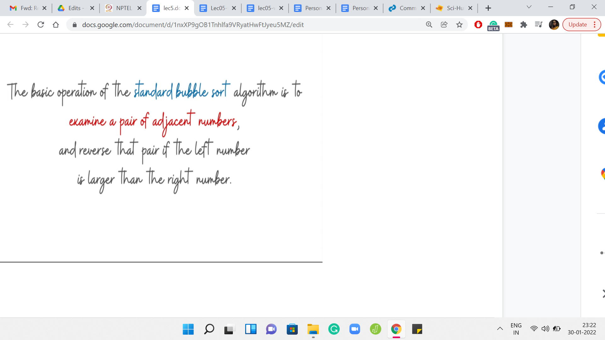
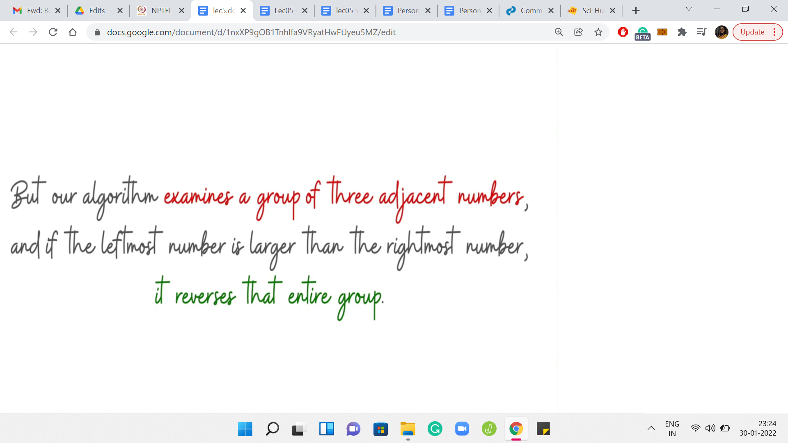

Let us begin as usual by going over the problem statement. We are introduced to trouble sort with some background on bubble sort, to begin with. Remember that in bubble sort, what happens is that we do repeated passes over the array. In each pass, whenever we encounter a consecutive pair of integers, which are out of their natural order, then we swap them to fix it.
Authors claim to have come up with a better or an enhanced version of bubble sort, where instead of considering a pair of numbers at a time, they are going to consider triplets of numbers at a time. If a triplet is out of order, by which they mean that the last number in the triplet is smaller than the first number in the triplet, then they are going to reverse this entire triplet. As opposed to swapping adjacent numbers, this entire triplet gets reversed.
Notice that when you reverse three consecutive numbers, the middle number actually stays in place. It does not shift in any way. That is essentially trouble sort. The claimed reason behind its name is that it is short for a triplet version of bubble sort. So, there is always a cheeky remark in the Code Jam problem statements. This is the one for this example here.
(Refer Slide Time: 04:04)

Let us take a look at the pseudo-code for trouble sort just to make sure that we are on the same page about what it does. There is going to be a flag variable done, which keeps track of whether we have managed to sort the whole array or not. If done is true, then that means that we can stop doing any further passes on the array.
We initialize done to true and then we start our pass. Because we are looking at triplets, we do not have to go all the way up to the (n-1)th element, we only go up to the (n-2)th element because otherwise, you will just fall off the cliff, so to speak. By n I just mean the length of the array.
So, I am using n to denote Len of L. What happens in the ith iteration is that you compare the elements in L[i] and L[i+2]. These are the extreme points of the triplet that starts at the ith location. If it turns out that these elements are out of order, so the element that appears earlier is larger than the element that appears later, then we reset the done flag to false. We say: Okay, we did encounter a problem, this array was not sorted in its present form.
To fix this particular aberration, we will reverse the sub-list from L[i] to L[i+2]. Once again, notice that this amounts to swapping the elements at L[i] and L[i+2] because the middle element, which is at L[i+1] stays in place during this so-called reversal. That is pretty much the entire algorithm. You keep fixing triplets for as long as you need to.
When you finally are able to make one full pass, without having encountered any broken triplets, then you stop. To understand what is going on, it is useful to walk through an example. Let us just go over the workout example that is given in the problem statement. We have an array here with 5 elements 5, 6, 6, 4, 3, in that order. The numbers written just below these elements are the corresponding array indices for our reference. Let us go over a run of trouble sort on this array.
(Refer Slide Time: 06:32)

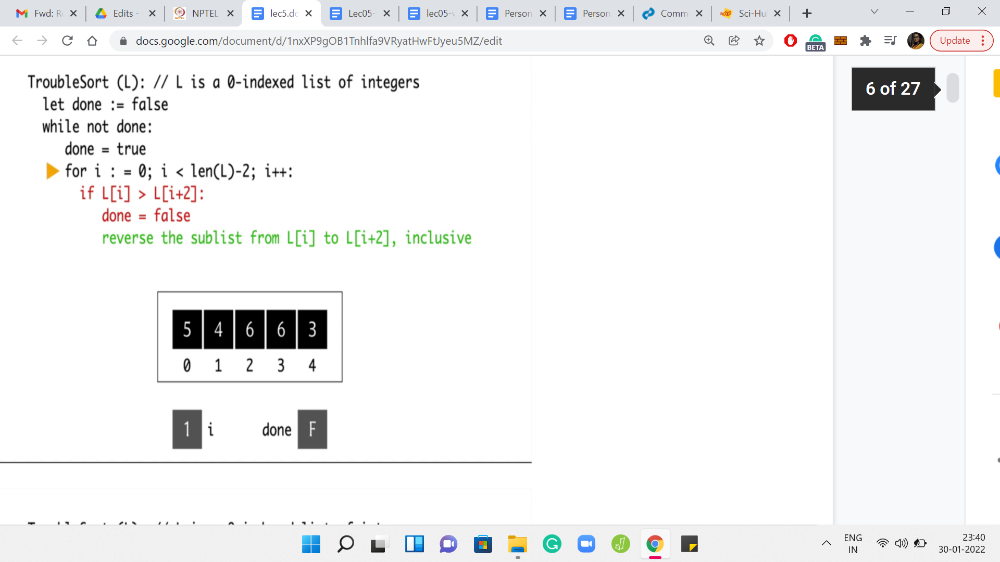


To begin with, the variable done is initialized to false, and i is not initialized yet. But we will get to that in a minute. We, of course, enter the while loop and reset done to true. Then we initialize ‘i’ to 0. Notice that in the first iteration of the for loop, we are comparing the elements at L[0] and L[2].
Those elements happen to be 5 and 6. Notice that the conditional does not really trigger because 5 is not greater than 6. So, we move on. We go back to the for loop, we increment ’i’ to 1. Now we are comparing the elements L[1] and L[3]. However, this time, the conditional will trigger because 6 is greater than 4. So, we enter this if block, and we reset done to false.
This is a note to say that this pass did have a problem. We want to flag that for ourselves. In the next step, we will try to fix this aberration by swapping these two elements. The language here is that you reverse the sub-list. But as we have mentioned earlier, that is the same as swapping the endpoints. So, this is now done. We can go back to the next iteration of for loop. At this point, ’i’ gets incremented to 2 and we are comparing the elements at L[2] and L[4].
Once again, notice that 6 is greater than 3. The conditional will trigger. Done is already false. So, we do not have to do anything there. But we do have to execute the swap. At this point, the array looks like 5, 4, 3, 6, 6. Now, if we go back to the start of for loop, ‘i’ is incremented to 3. But notice that there is no triplet that starts from L[3]. In particular, we have just run out of room.
So, this iteration is done. We now go back to the while loop. Are we done? Well, the value of ‘done’ is false. Remember, we had a warning that this pass had some issues, not all the triplets were properly placed. So, we need to do another round of checking. In fact, if you look at the array right now, it is not yet quite sorted. It is a good sign that we are giving this another sort.
(Refer Slide Time: 09:03)
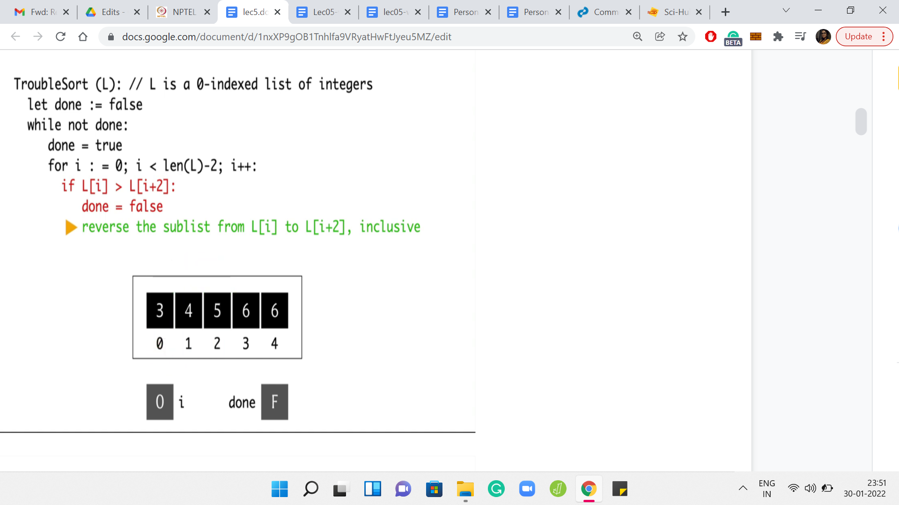
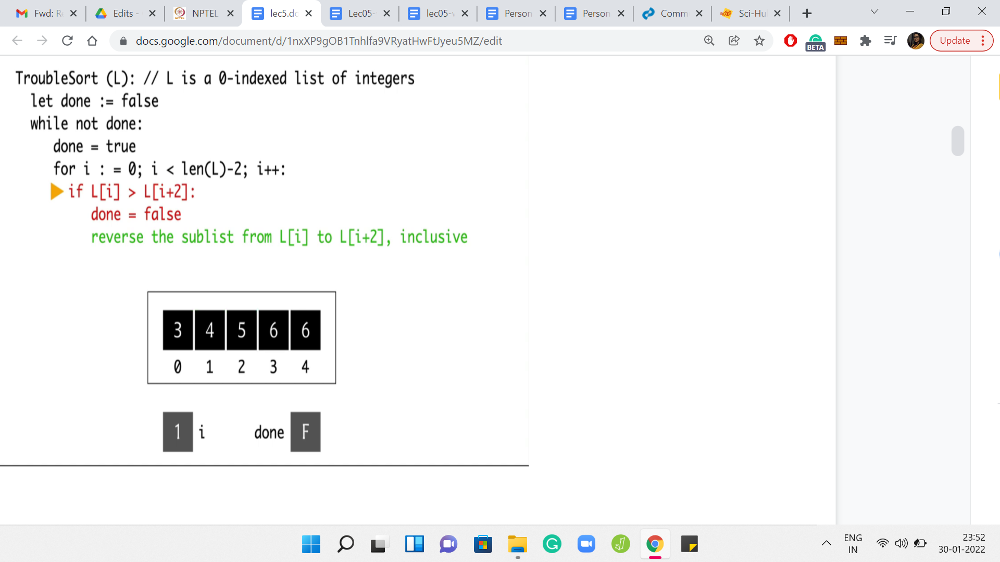


Once again, we will begin by resetting the done variable to true and then initialize the ‘for’ loop. So ‘i’ get reset once again to 0. This time, notice that when we compare the elements at L[0] and L[2], this is no longer a valid triplet. Since 5 is greater than 3, we do need to execute a swap before which we should also remember to reset the done variable as before. So, ‘done’ is now false. We have the swap between 5 and 3.
We go back to the start of the for loop, and we increment ‘i’ to 1. At this point, we are comparing the elements L[1] and L[3]. Notice that this pair of elements is already in the right order. So, we do not have to do anything. The conditional does not trigger and we go back to incrementing ‘i’ to 2. When i=2, we are comparing the elements by 5 and 6. Once again, these guys are doing fine.
We do not need to do anything here. We go back to the ‘for’ loop. But once ‘i’ is incremented to 3, we have essentially run out. So, we go back to the start of the while loop now. Once again, notice that we are not done yet. We will have to do this one more time. We reset done to true. But this time around, notice that every time we compare these triplets, everything is going to work out. You can see this by just observing that the whole array is sorted.
In particular, you will never encounter a triplet, which has its elements being in the wrong order. Everything works out here and we are, in fact, this time done. The algorithm stops with the array state being 3, 4, 5, 6, 6, which looks pretty good. Everything is sorted. You might be tempted to think that trouble sort is a real sorting algorithm after going through this example. But it turns out that that would be quite misleading.
(Refer Slide Time: 11:12)
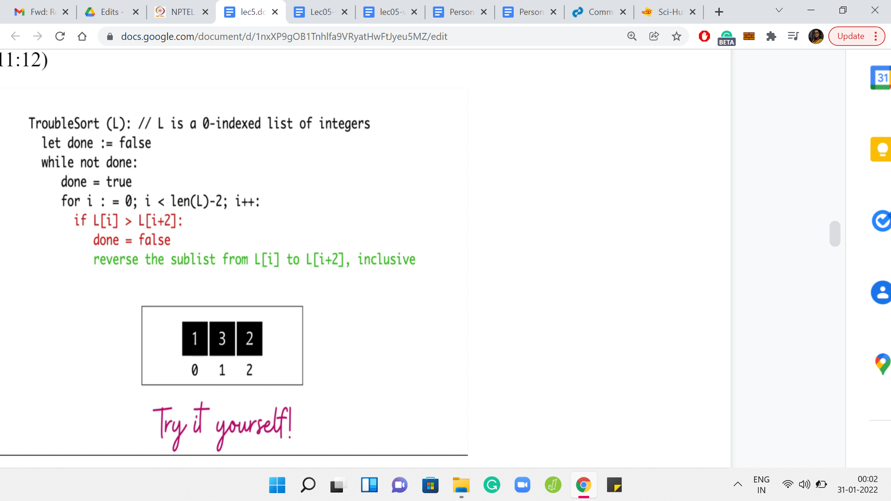

Why don’t you take a moment here to try ‘trouble sort’ yourself on this small example? Think about what trouble sort would do. See if you can come up with your own examples where trouble sort has suspicious behavior. Hopefully, you had a chance to take a look at this. And if you did, you would have realized that trouble sort is not going to successfully sort this array.
The only elements that it has a chance to compare are the elements that are at indices 0 and 2. Those, of course, seem to be perfectly in order. But you can see that the overall array is certainly not sorted. So, trouble sort does fail at this point. In fact, that turns out to be the problem statement.
(Refer Slide Time: 11:56)
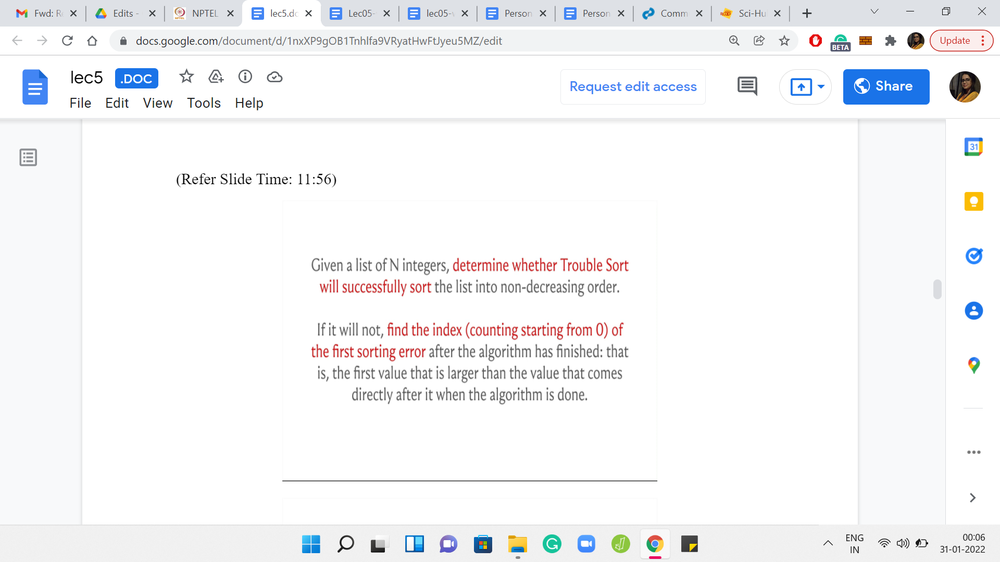


It is our task to figure out if a given array gets sorted by trouble sort or not. Further, if trouble sort fails, we also have to identify the first point of failure, which is defined as the smallest index with the property that the value at that index is larger than the value that immediately follows it in the array after trouble sort has finished processing the array. Of course, you might be thinking that trouble sort looks like a reasonably straightforward algorithm.
Why not just simulate trouble sort on the input array, and check if the resulting array is sorted or not? That is a perfectly valid approach. But to figure out if that is going to be feasible, we will have to think about the complexity of running trouble sort on a given array. Then we have to take a look at the problem limits. Let us address the first question first. Once again, take a pause here, go back in the lecture if you need to, to look at what trouble sort is doing more closely. Think about what would be a valid upper bound for the complexity of trouble sort, when it is run on an array with ‘n’ elements. Come back when you are ready. Hopefully, you have had a chance to think about this.
(Refer Slide Time: 13:16)


Let us take a look at the trouble sort pseudo-code again. You will see that there is this for loop that clearly runs for ‘n’ iterations, again being the length of the array that we are working with. The real question: How many times do you run this for loop? That is going to be as many times as you need to run the outer while loop. You can probably come up with examples of arrays where the outer while loop actually runs for ‘n’ many iterations.
Since that can happen, we know that there are certainly instances where the running time can be as bad as ‘n-squared.’ It turns out that the running time can, in fact, also be bounded by ‘n-squared,’ it is never worse. You can show that the outer while loop will never execute more than n times. The reason for this will become clearer as we go along.
But hopefully, you had some intuition for why the answer to this question was order n-squared. The question: Is this going to be a reasonable strategy for us? For this, we need to look at the limits of the problem.
(Refer Slide Time: 14:30)
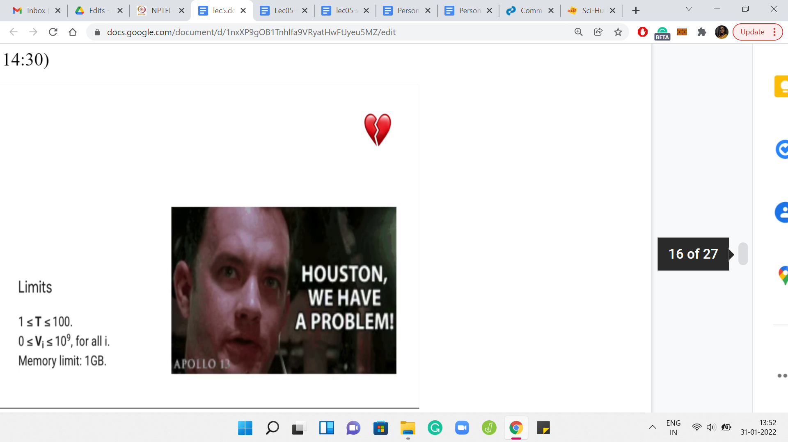
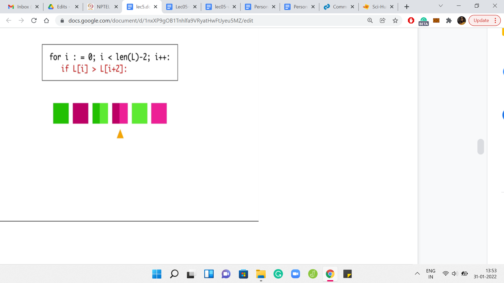


It turns out that our arrays can have as many as 109 elements. So, the order n-squared algorithm is not really going to work out. We need a slightly different approach. Let us go back to the drawing board and look more deeply into what trouble sort is doing. Here we have an array with six elements, and I have pulled out the most crucial part of the trouble sort pseudo-code, which emphasizes what is happening during the passes.
Let us take a look at what happens when we do a one-pass over this array. In the first iteration, the first and the third elements get compared. In the second iteration, the second and the fourth elements get compared. In the third iteration, the third and the fifth elements get compared. In the fourth iteration, which is the final iteration, the fourth and the sixth elements get compared.
Notice that the green elements get compared to the green elements, and the pink elements get compared to the pink elements in every single iteration. In particular, a green element never gets compared with a pink element, just by design. In some sense, because you are skipping over the middle element of the triplet, whenever you are considering a triplet, you never have a chance to compare an element, which is sitting at an odd index with an element that is sitting at an even index. It means that there are going to be a lot of lost opportunities.
If you remember the array 1, 3, 2, this is exactly what was happening. Trouble sort can be thought of as two independent runs of an algorithm that you are already familiar with. Take a moment to pause here and think about if you can fill in the blank in this sentence: So, trouble sort is just two parallel runs of which algorithm? Do not take the word “parallel” too seriously.
What I mean is that it is essentially running a familiar algorithm on some sub-array and it is running the same algorithm on another sub-array. Can you think of ‘trouble sort’ this way? If you have had a chance to think about this, you might have come to the conclusion that trouble sort is essentially just a bubble sort being run separately on the sub-array that consists of the odd indices, and separately on the sub-array that consists of the even indices.
(Refer Slide Time: 17:00)
 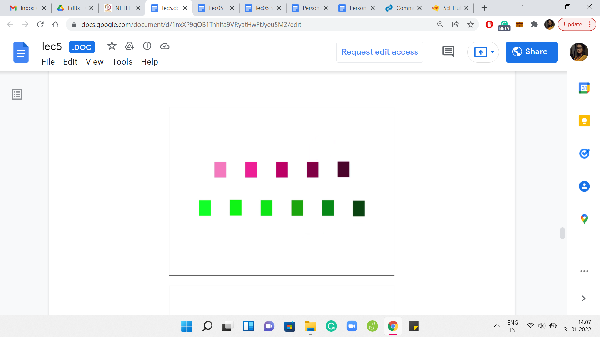
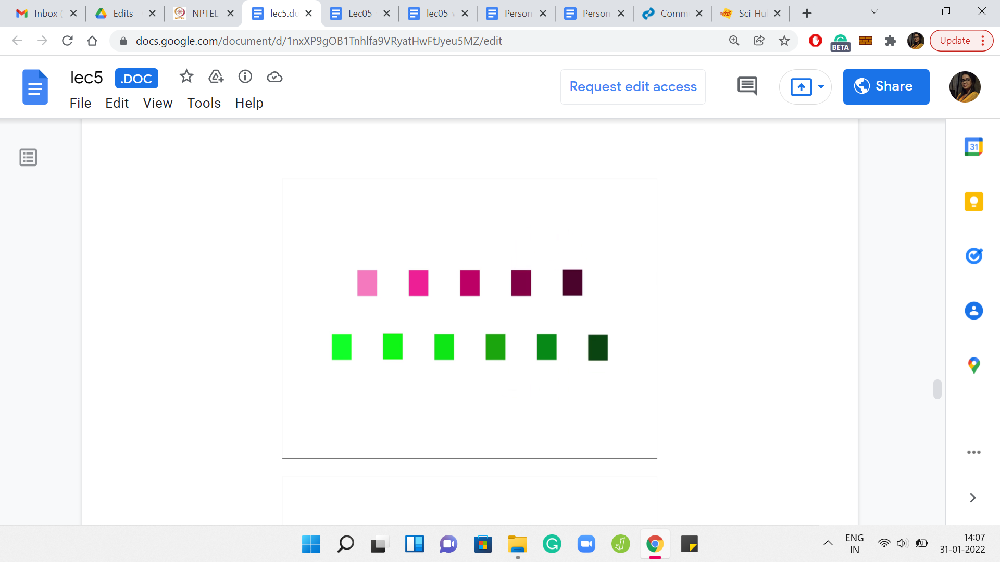 
You can think of trouble sort as sorting the even indices separately from the odd ones, and then putting them back together. This is a really useful perspective on trouble sort because it allows us to implement trouble sort without really implementing it. In particular, what we want to do is take an array and figure out what is the array that trouble sort would output if it was working with this given array as input.
We want to get to this information without actually literally implementing trouble sort. Now knowing what trouble sort what is effectively doing, we can do this in our own way. I think by now you have enough hints to piece together the final algorithm. If you want to take a pause here, this would be a good time to try and figure out the rest of the details yourself, and then come back to exchange notes once you have given it a shot. So here is what you could do with the information that you have at hand.
(Refer Slide Time: 18:09)
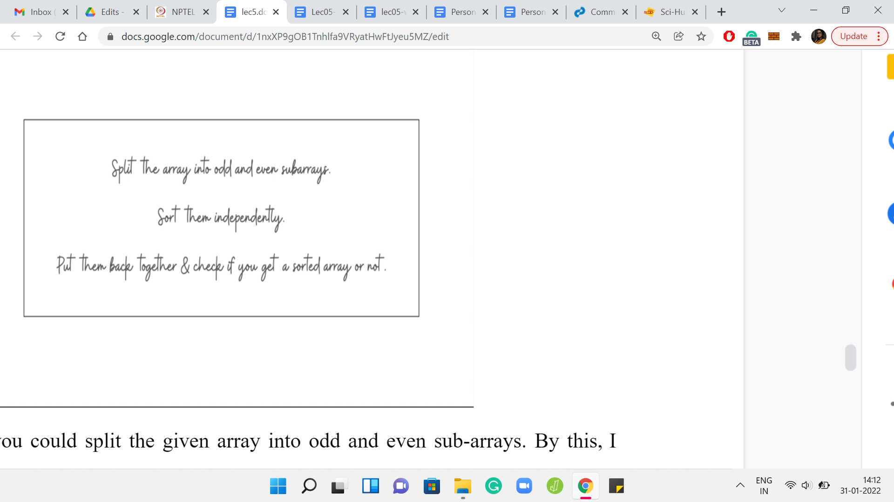
To begin with, you could split the given array into odd and even sub-arrays. Collect all the numbers that are sitting at odd indices, and declare that to be your first array. Then separately, collect all the numbers that are sitting at even indices, and this becomes your second sub-array. Now, you could sort these two sub-arrays independently.
Here crucially, remember to use an efficient sorting algorithm. Do not use something like bubble sort to stay true to the spirit of trouble sort or something like that. That would just bring you back to square one, in terms of an inefficient implementation that will definitely timeout. At this point, use a built-in sorting function, or even if you are using a sorting function that you have written. Make sure that it is based on an order ‘n log n’ kind of algorithm.
Sort these two sub-arrays independently, and then splice them back together. Put them back to one big array, with the odd elements being in the odd positions and the even elements being in the even positions. If this array is sorted, then that is what you have to output (if trouble sort works). Otherwise, you can do one-pass over the array to figure out the first inversion that you encounter.
What you want is the first pair of adjacent elements that are out of their natural order, and that is fairly straightforward to do. At this point, I think, we have come to the end of discussing how we implement the solution. So we can now move on to the implementation. But let me just make a quick point before that, which is about the running time of trouble sort.
Remember, I said that the running time can be as bad as n-squared. But how do you show that it is never worse than n-squared? Now that trouble sort is essentially performing two independent runs of bubble sort, you can use what you know about the analysis of bubble sort to argue an upper bound on the running time of trouble sort. In particular, you can observe the behavior of the even and the odd sub-arrays independently, and conclude that the outer while loop will never run for more than ‘n’ iterations.
Of course, the inner ‘for’ loop by design will run for exactly n-2 iterations every time. The overall complexity is going to be ‘order n-squared.’ That is a claim that we had made earlier. I just wanted to make sure that we have some sense of why it is true.
(Refer Slide Time: 20:50)
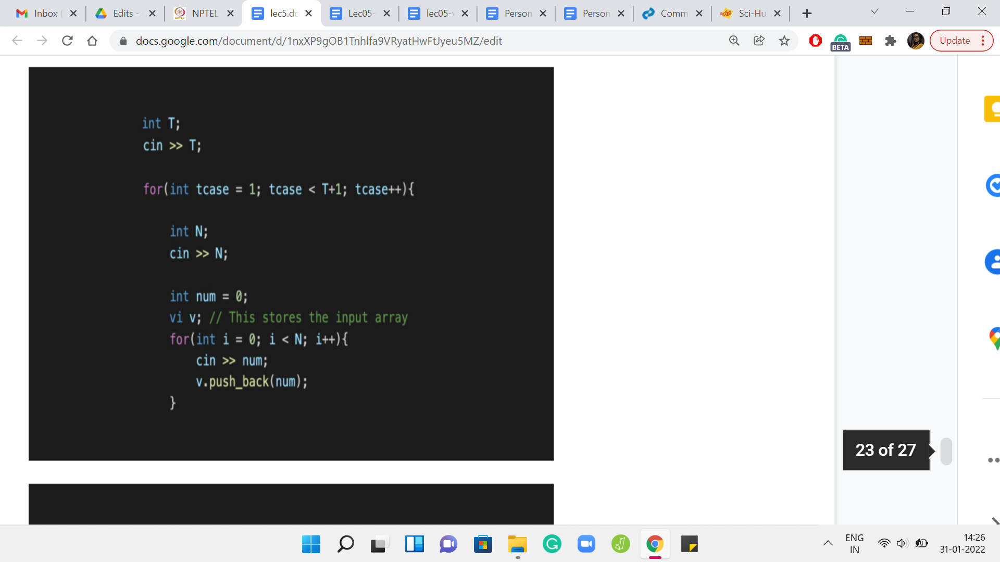

Let us take a look at the implementation. I am just going to share the code snippets from the sample solution. You can find the sample solution from the official GitHub repository for these lectures. There is a link in the description of this video, as well as the course website. So, there is nothing special about the input formatting. It is pretty standard stuff. There are ‘T’ test cases. Every test case is a number followed by the elements of the array given as space-separated integers, so you just read them all in.
The first thing we want to do is split the input array into these odd and even sub-arrays. We just declare two integer arrays, and we run a loop that goes over the original array. Depending on whether the current index is odd or even, you pull out that element and push it to the correct sub-array.
(Refer Slide Time: 22:02)
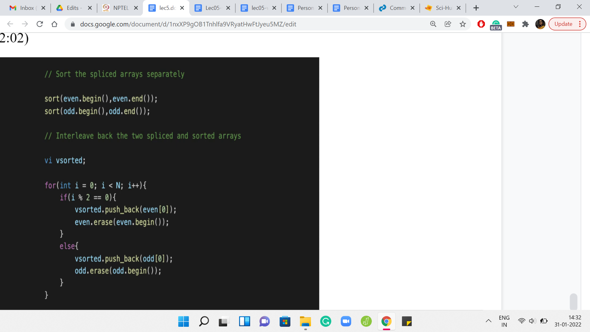
The next thing we want to do is to sort these sub-arrays that we have generated. This is the part where we need to be careful about using an efficient sorting algorithm. Here, I am just using the built-in sort function in C++. As I said, your language of choice should have an appropriate sorting method that you can use.
You could write your own sorting function as well. Just make sure that it is not bubble sort and that you are using or implementing an efficient sorting algorithm here. This is crucial to ensuring that you do not get a timeout. After this, you still need to put these arrays back. That is what is happening in the second half of this code.
We declare a new array called ‘sorted,’ which we are going to build out. This array that is named sorted may not be sorted. That is what we have to figure out. Maybe I should have used a variable name like ‘trouble sort output’ or something like that. But anyway, we will live with this. So, what is going on with ‘sorted?’ How are we building it?
Essentially, it is the opposite of what we were doing previously. We were splitting the array and putting things back trying to ensure that the sorted version of the odd sub-array falls in place in the odd indices. The sorted version of the even array gets into the even indices of this array that we are calling ‘vsorted.’ Once again, you just run a loop. You do different things based on the parity of the current index.
If you are at an even index, then you pull an element from the even sub-array. If you are at an odd index, then you pull an element from the odd sub-array that you have sorted. The way I am doing this is that I am always pulling what is at the head of the array and I am able to do that. That is working because notice that I am erasing that element from the array that I am working with.
This is just one convenient way of doing it. But there are many other ways. You could instead also have an additional index, for instance, that advances through these arrays instead of deleting them as you go along. Whatever way you decide to do it should be perfectly fine.
(Refer Slide Time: 24:22)
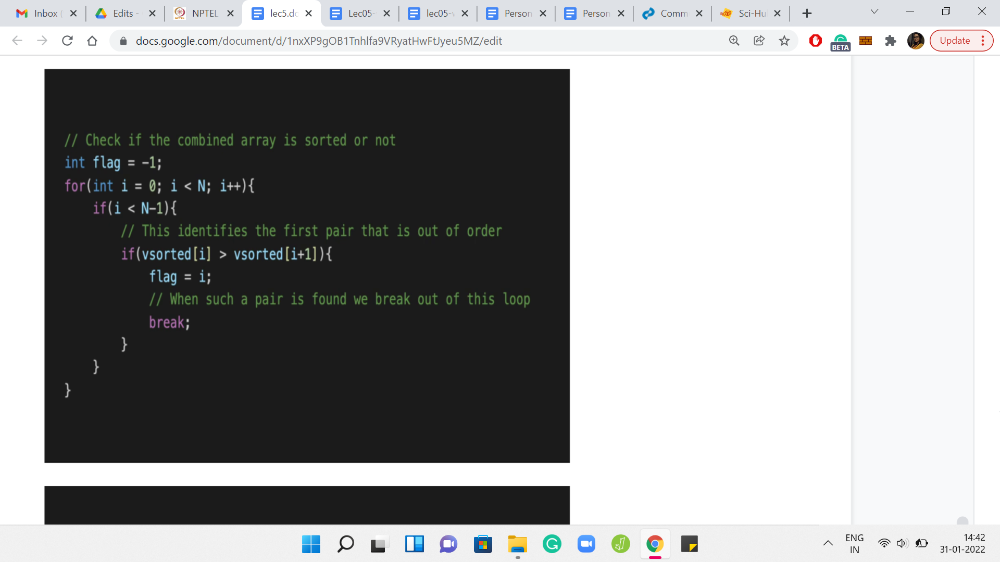
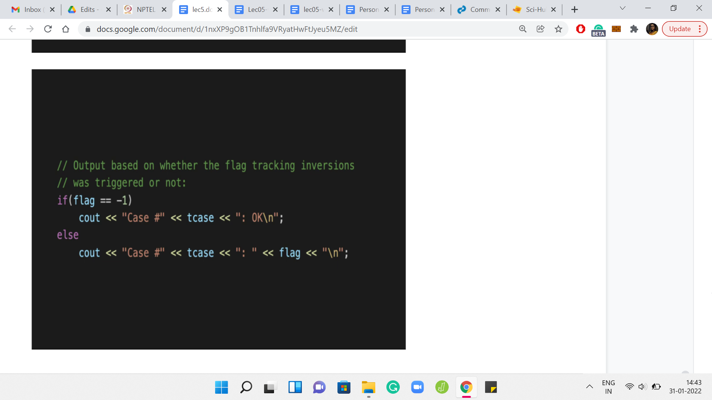
Now that we have put everything back together, all we need to do is check if this array that we are calling sorted is actually sorted or not. Remember that if it is not sorted, we have to report the first inversion that we find, the first pair of adjacent elements that are out of order. This is fairly intuitive. You just go through the array step by step.
Every time you are at the ith location in the array, just compare the ith element with the (i+1)th element. If you have a problem, which is to say that the ith element is larger than the (i+1)th element, then you can trigger a flag to say that this is not sorted. The flag can also double up to remember the location so that you can just output the value of the flag as the answer.
Remember, I am initializing the flag to -1, just so that there is no confusion. Because the first problem could even happen at the 0th index. For instance, in 1, 3, 2, the answer would have been 0. So, initialize your flag to -1. When you come out of this loop, just check if the flag is -1. If it is that means that the flag was never triggered - you never had a problem as you went along. The array is, in fact, sorted.
But if the flag is a value that is different from -1, then the value flag is actually the answer that you are looking for. It is the smallest index at which you encounter an adjacent inversion. You output the value of the flag in this case. The other details are pretty routine in terms of the formatting of the output and so forth.
In Code Jam, it is pretty standard that they also want the case number and the literal word case spelled out and so forth. Make sure that you get those details right. Then I think you should do well, in terms of getting your code to pass. Please do try this out and let us know how it went over at the Discord community or on the mailing list. We will, as always, look forward to hearing from you. In the next lecture, we will talk about a different problem and I look forward to seeing you there!